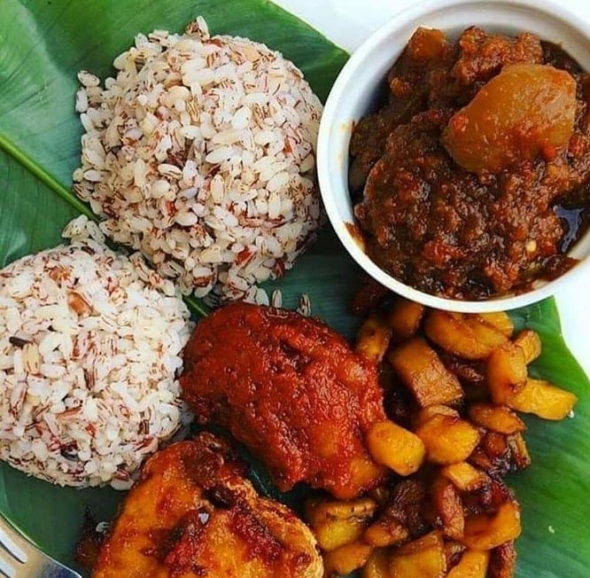

Rice Varieties
| Fried Rice |

Recipe for fried rice
Fried Rice: Fried Rice is a very simple yet delicious recipe. This version relies on a ton of fresh vegetables, Beef Liver, and a little bit of Oil for crisping it up.
- 2 Cups cooked Rice
- 1 Cup Mixed Vegetables I used Carrots, Sweet Peas, Sweet Corn and Green Beans
- 1 cup Onion diced
- 2 Scallions
- 1 Cup Beef Liver Cubed
- 1/2 Teaspoon Thyme
- 1 Teaspoon Curry powder
- 1/2 cup Chicken stock
- 1 Stock cube
- 3 Tablespoons Oil for frying
- Salt to taste
Ingredients
- Add the parboiled Rice to the stock and cook until the water is dried up.
- Preheat the oil in a Pan, throw in the Onions and fry for a minute or two, add the scallions, mixed vegetables and the seasonings ( Thyme, Curry Powder, Salt and Stock Cube).
- Throw in the rice and stir-fry for about 3 to 5 Minutes. Take it off the heat and serve.
Instructions
- | Calories: 227kcal | Carbohydrates: 27g | Protein: 7g | Fat: 9g |
- | Saturated Fat: 1g | Cholesterol: 45mg | Sodium: 257mg |
- | Potassium: 235mg | Fiber: 2g | Sugar: 2g | Vitamin A: 4635IU |
- | Vitamin C: 7.6mg | Calcium: 26mg | Iron: 1.6mg |
Nutrition
| Jollof Rice |

Recipe for jollof rice
Jollof Rice:This is a rich and incredibly tasty west African one-pot Meal. It is a very versatile dish, and it is usually made from scratch using Rice, Tomatoes, Pimento peppers, Tomato paste, Scotch bonnet, Onions, Salt, and other spices.
- 6 Cups Rice Long grain
- 3/4 Cup Olive Oil
- 5 Tbsp Tomato paste
- 4 Cups Chicken stock
- 1 Tbsp Curry Powder
- 1 Tbsp Thyme
- 4 cloves Garlic
- 2 bay leaves
- 1 Tbsp Ginger Grated
- 1 Tsp Salt or to taste
- 1 Onion Medium sized(sliced)
- 1 Tomato sliced (Large size)
- 1 Tbsp seasoning powder or seasoning cubes
- 1 Onion Sliced
- White Pepper or black pepper to taste
Ingredients
- 3 Red Bell Pepper
- 3 Tomatoes Plum
- 2 Scotch bonnet
- 1 Onion Diced
For the sauce, blend together:
- In a large pan, preheat the cooking Oil. Once the oil is hot, add the diced onions and fry for about 3 to 5 minutes or till the onions become soft.
- Add the Tomato Paste. Fry for about 5 minutes, then add the Garlic, Ginger and bay leaves and let it cook in the tomato paste for about 2 minutes.
- Add the blended pepper and allow the pepper to cook until the water is reduced entirely and the oil is seen floating on the fried pepper.
- Season with Thyme, Curry powder, salt to taste and seasoning Cubes. Leave to cook for another 2 to 5 minutes.
- Stir in the Rice until it is well coated with the sauce. Add the Chicken stock and cover it with a tight-fitting lid then allow it to come to a boil.
- Once it starts boiling - about 3 to 5 minutes after placing it on the stove, reduce the heat immediately to medium-low and steam until the rice is done.
- Turn off the heat and add the sliced Tomato and Onions, and stir together briefly. Then, cover it up immediately so that the heat remaining in the Rice can steam up the vegetables a little bit.
- You can serve with Plantains, Chicken, Vegetables or as desired. ENJOY!
Instructions
- Normally, the bay leaves should be removed once the rice is done. However, if you can’t find the bay leaves after the rice is done, don’t be tempted to dig through it since over- stirring will cause the rice to break. Just leave it and remove it whenever you find it.
- If you choose not to use butter, you will need to add an extra tbsp of Oil
Notes:
- |Calories: 418kcal | Carbohydrates: 85g | Protein: 10g | Fat: 3g | Saturated Fat: 0g |
- | Cholesterol: 2mg | Sodium: 502mg | Potassium: 506mg | Fiber: 3g | Sugar: 6g |
- |Vitamin A: 1540IU | Vitamin C: 52.3mg | Calcium: 55mg | Iron: 1.8mg |
Nutrition
| Ofada Rice |
Recipe for ofada rice
Ofada Rice: Ofada Rice and sauce is a Nigerian favourite. The combination of meats and peppers adds complex flavours that keeps everyone wanting more. The best part about this ofada rice recipe is that is easy to prepare and will have you enjoying the meal in no time at all.
- 2 cups ofada rice
- 4 cups water
- 1 tsp. Salt
- 1 tsp. vegetable oil
Ingredients
Ofada Rice
- 1/4 cup palm oil
- 1 tbsp. Iru (Locust Beans)
- 1 kg assorted meat (Shaki, Kpomo, Liver) - already cooked
- 600 g cooked chicken
- 1 cup chicken broth
Ofada Sauce
- 1 tsp. salt
- 1 seasoning cube
- 1 tbsp. crayfish
- 1 medium onion
- Green tomatoes
- Green bell pepper
- Green habanero Pepper
Seasoning
- Heat up water in a pot until it boils.
- Rinse rice thoroughly with cold running water and add to pot of boiling water. Add salt and oil.
- Cook for 35 minutes or until it’s ready.
Instructions
Ofada Rice
- Blend green tomatoes, peppers and onion. Place in a pot and boil for 15 minutes
- Heat up a pot and add palm oil. Allow to bleach for 10 minutes - This means leaving it to heat up and smoke till it is almost similar to vegetable oil. After 10 minutes allow to cool a bit.
- Add chopped onion, saute, then add the boiled tomato/pepper mixture.
- Add salt, iru (locust beans), assorted meat and crayfish. Cover and allow to cook till oil floats to the top.
- Add chicken stock, taste and add seasoning cube if necessary. Now you may add the cooked chicken.
- Allow the ingredients to cook for 5 more minutes and simmer.
Ofada Sauce
- | Calories: 726kcal | Carbohydrates: 91g | Protein: 28g | Fat: 25g | Saturated Fat: 10g |
- | Cholesterol: 121mg | Sodium: 293mg | Potassium: 423mg | Fiber: 2g | Sugar: 1g |
- Vitamin A: 130IU | Vitamin C: 7.7mg | Calcium: 48mg | Iron: 1.9mgb
Nutrition
| Coconut Rice |

Recipe for coconut rice
Coconut Rice: A savory side dish made with rice, cooked in aromatic coconut milk. It is so rich, luscious and bursting with aromatic coconut flavors. You will be surprised that a Rice recipe this simple has so much flavor.
- 1.5 pounds Chicken quarters cut into small bite size
- 2 scotch bonnets Ata Rodo
- 1 Tsp Thyme
- 1 Tsp Curry powder
- 1 Seasoning Cube
- 1 Bay leaf
- 1 Onion Diced
Ingredients
Ingredients For the Chicken
- 3 Cups Rice
- 2 Cups Coconut Milk
- 2 Cups Chicken Stock From the Boiled Chicken
- 1 cup Green bell pepper diced. orange, yellow or Red Bell peppers can also be used.
- 2 Tablespoons crayfish optional
- 2 Tablespoons Coconut Oil or any other cooking Oil
- 1/2 lb Shrimps Optional
Ingredients For the Rice
- Cut the chicken into small portions, rinse them and put them inside the Pot.
- Season with salt, stock cube, thyme, curry powder. Add the Onions and Habanero pepper and Bay leaf. Stir, cover, and cook for 15 minutes then separate the chicken from the stock and set aside.
- In a clean pot preheat the coconut oil, add the onion and stir fry till the onions become translucent. (about 2 to 3 minutes on medium heat). Add the coconut milk, chicken stock, crayfish, and habanero peppers and let it come to a boil.
- Add the washed and drained rice and leave to cook for 15 minutes. Quickly throw in the shrimps, green bell peppers, and chicken. Cover it up immediately and let it cook on a low heat for 10 more minutes.
- Turn off the heat and leave to steam for 5 minutes before opening the lid. Stir together. Serve and enjoy!
Instructions
- Be sure to rinse the rice before cooking it. This will reduce the starch content in the rice a bit.
- Cook the rice on a low simmer to prevent it from burning
- The can coconut milk works best for this recipe not the ones in the cold milk section.
- For this recipe, I used basmati rice, however, you can use any type of rice you like but note that cooking time varies for different types of rice.
Notes:
- | Calories: 726kcal | Carbohydrates: 91g | Protein: 28g | Fat: 25g | Saturated Fat: 10g |
- | Cholesterol: 121mg | Sodium: 293mg | Potassium: 423mg | Fiber: 2g | Sugar: 1g |
- Vitamin A: 130IU | Vitamin C: 7.7mg | Calcium: 48mg | Iron: 1.9mgb